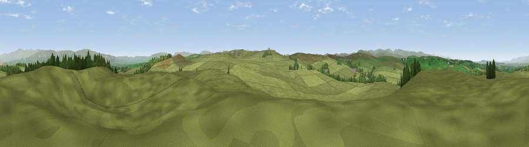

Viewpoint near Crosby Ravensworth
#12186 in England · top 46% of its area beats it · near Crosby RavensworthWhere it is
The exact computed spot (NY 63675 12975). Click the marker for map links.
The view, rendered

A 360° render of this exact spot computed from the terrain model, tree cover and land cover — summer colours, afternoon light, calibrated against photographs of famous viewpoints. Real trees, hedges and buildings will differ in detail.
The panorama
Grey silhouette: terrain skyline in each direction (720 bearings, Earth curvature and refraction included). Dashed green: skyline with trees (+15 m) and buildings (+8 m) as obstacles. Blue strip: how far the ground is visible on each bearing.
Where the view opens
Wedge length = distance to the farthest visible ground on that bearing (vegetation-aware). Rings at 10, 25 and 50 km.
What fills the view
96% grassland · 3% woodland ·
Angular shares of the visible panorama (visual magnitude), not map area. Landscape diversity 0.09 (0–1 Shannon).
Key numbers
More beautiful places nearby
The staircase of upgrades: each row has a higher view potential than everything closer. Driving times are estimates from straight-line distance, calibrated against real road routing — check an actual route before setting out.
| Place | Direction | Drive | Score |
|---|---|---|---|
| Linglow Hill | ESE · 2 km | ~5 min | 66.8 |
| Knott | SSE · 4 km | ~9 min | 68.2 |
| Long Scar Pike [Coalpit Hill] | WSW · 5 km | ~11 min | 68.9 |
| Long Fell | WSW · 9 km | ~18 min | 72.4 |
| Viewpoint near Sadgill | WSW · 12 km | ~22 min | 73.1 |
| Viewpoint near Sadgill | WSW · 12 km | ~23 min | 75.7 |
| Ashstead Fell | SW · 13 km | ~24 min | 76.3 |
| Castle Fell | SSW · 13 km | ~24 min | 77.2 |
54.51077, -2.56255 · source: screening · position refined by local search. Computed location — check access rights before visiting.